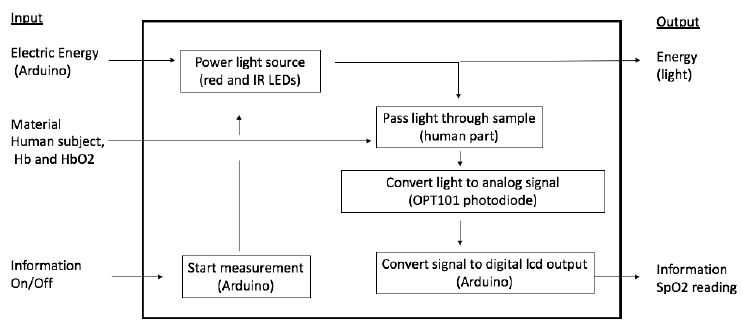
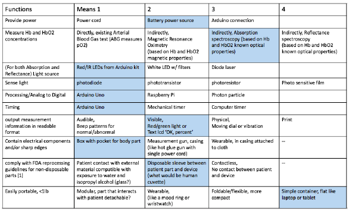
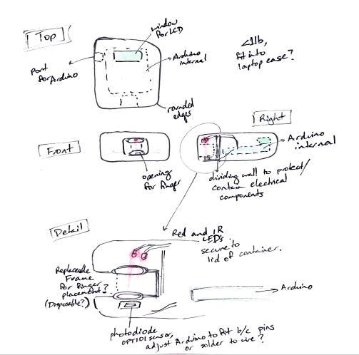
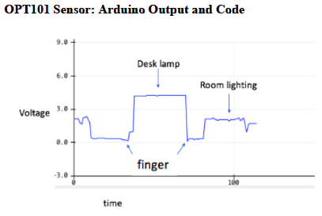
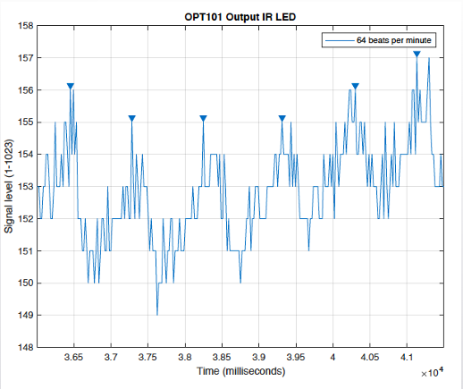
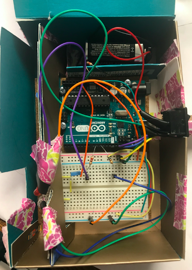
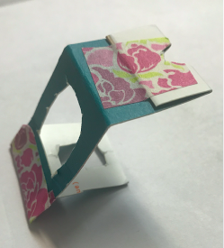
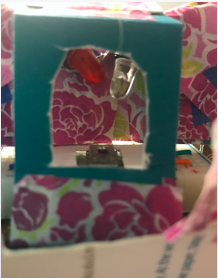

GOAL I designed and prototyped an Arduino-based Pulse Oximeter. The steps of an engineering design cycle followed for this project are as follows: problem identification identification of design space with matched functions and means formulation of a solution to meet the constraints/objectives of the project modeling of parts and prototyping evaluation of the design BACKGROUND Design of a pulse oximeter was of particular interest given the (Covid-19) pandemic and resulting health and economic crises the US currently faces. Pulse oximeters as a class offer a quick means of assessing the user’s health without requiring attention from a medical provider. The market for such prescreening devices is expanding due to consumer’s pandemic related purchases. The focus of the design project was finding a viable alternative to already commercially available pulse oximeters. DESIGN PROCESS The first step in the design process is determining what problem the engineering design will attempt to address. A problem statement then attempts to refine these goals into a single sentence that can be used as reference for the remainder of the design process. For this pulse oximeter project the problem statement was as follows: Design a quick, non-invasive, accurate way to measure incoming patient peripheral blood oxygen saturation levels that will not contribute to infectious disease spread. FUNCTIONAL ANALYSIS  DESIGN SPACE Possible design directions corresponding to specific functions are shown in the table below:  PRELIMINARY SKETCH Below is an early sketch of a pulse oximeter design that follows from the selected design:  MATLAB SIGNAL PROCESSING The next step was physical modeling. This involved first learning how to find voltage output corresponding to different ambient light conditions.  Once the selected sensor was confirmed to match voltage to light conditions, the functioning under IR and Red LEDs was checked. Signal output was then processed using a digital bandpass filter from the MATLAB Signal Processing Toolbox. The selected range was between 0.5 and 10 Hz, which is the allowable range for a human pulse.  PHYSICAL MODEL Because this project is aimed at designing a physical object, some consideration of product packaging was necessary. Below is a prototype showing internal layout of the pulse oximeter, with casing made of heavy cardstock.  The final design casing should be made of plastic or metal. A model of the casing was also built in SolidWorks (RIGHT). To both protect fingers and to limit disease spread, patient contact with the pulse oximeter is reduced by use of a disposable paper sleeve, shown below.  